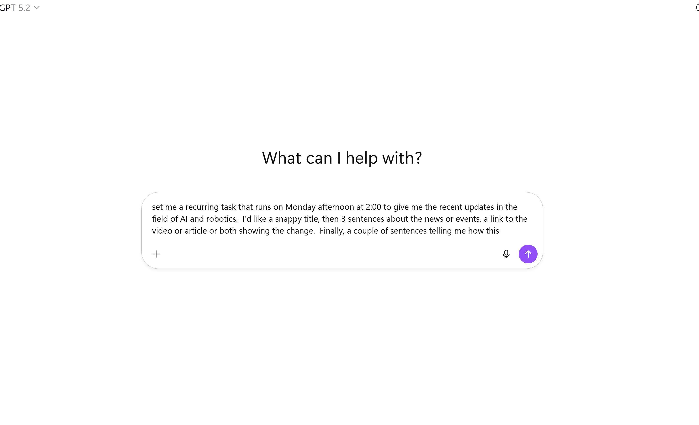

Artificial Insights
In This Issue

Claude Embeds in Excel
Paid users can now run Claude directly inside Excel to build multi-tab spreadsheets and pull live web data. It currently runs on a newer model than Copilot, though Microsoft plans to close that gap within 60 days.
Health & Education Accelerate
Anthropic launched a HIPAA-ready toolkit for clinical systems, while ChatGPT Health Connect (rolling out next week allegedly) creates a dedicated tab for wellness and lab data.
Ads Arrive in ChatGPT
Free users will begin seeing context-aware ads at the bottom of the chat interface. OpenAI claims these aren't search-style ads, but rather suggestions based on your conversation history.
The Wearable Wave
Rumors are increasing around OpenAI and Apple developing "ambient" devices (pen or earbud form factors) to capture and summarize daily life. Our data privacy ship may have already sailed, but this pushes the envelope further.

🛠️ Deep Dive on Claude in Excel
The News: Claude can now generate complex spreadsheets with multiple tabs.
My Take: While the "paid version" requirement is a hurdle, the efficiency is undeniable. I recently tested this using a dataset for student success in intro classes. Within 60 seconds, Claude researched external benchmarks, structured the table, and generated three comparative charts. I was really impressed with the structure (pivots, graphs), but the data itself still requires a human reviewer." It is a massive productivity multiplier, but only if you audit the work. Also, IT needs to give permission to add it on a work machine.

🔬 Copilot & Data Hygiene
AI embedded in office tools (like Copilot in PowerPoint) is highly dependent on the quality of the input data. For example, I generated a slide deck for the Comunity of Practice meeting, and frankly, it wasn't very elegant at all. Too much text on screens, and compressing as much information as possible per slide. I think this is a great example of how AI tool effectiveness is very dependent upon the quality of the underlying data. If I'm better at formatting the word document it's drawn from, the quality would improve. As we look at using all of our data for possible AI tools, this is something we'll probably run in to frequntly as we learn how to strcuture the underlying data. TheLesson: The key to these tools being useful is formatting the data the way a machine understands it best. It's still a lot of trial and error, but "garbage in, garbage out" has never been more true.

🎓 Socratic vs. Answers
Anthropic, Google, and OpenAI have a learning/education model on each of their LLM's that have been available for a while. They really do a nice job of using Socratic questioning to guide students rather than dumping answers. Google Gemini also feeds you YouTube vidoes in support of whatever topic. It's worth trying out if you haven't had a chance to do so yet.
🎓 Managing the Cognitive Risk
I like how LLM's can provide personalized learning, such as the student who only understood concepts if I framed them around Warhammer. While it helped out a lot in the short term, I wonder if always framing things in a comfortable space is doing the student a disservice by reducing the critical thinking needed to find common ground with a new topic. I'm glad that the Brookings Institute is looking at these concerns as well.

🎬 The Recurring Task
ChatGPT has a function that many people are not aware of - recurring tasks. I've started using it to draft recurring administrative tasks to help keep me informated. In my case it's news items, as you can see in the demo, but it can do anything that you've given the model access to.


The Writing Clone
This is kind of an 'old' trick, but still a good one. It can help you to require fewer LLM edits when AI helps you write a communication. It forces the AI to write like you.
The Prompt:
"You are an AI writing assistant. Your task is to closely replicate a specific writing style based on the description provided below. Look at this sample of writing to create a description that will capture Tone and attitude, Level of formality, Sentence length and structure, Use of humor, sarcasm, or restraint, Preferred vocabulary and complexity, and Rhythm and pacing. Do not imitate content, opinions, or subject matter. Only replicate how the writing sounds. Next: you ask the LLM to write whatever you need using the description you just received."